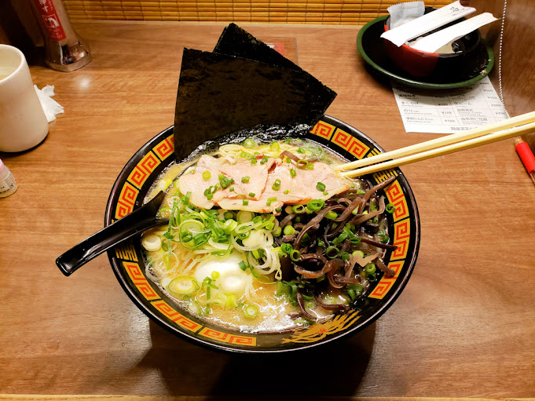
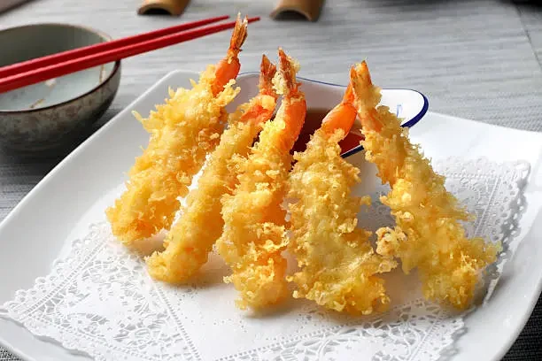
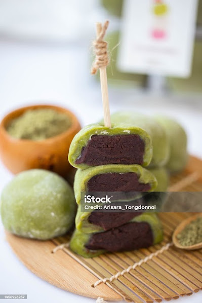

Al Restaurant Sakura combinem la tradició japonesa amb ingredients frescos i de proximitat. Preparem cada plat al moment perquè gaudeixis d'una experiència autèntica al cor de Badalona.
Des del sushi elaborat pels nostres mestres fins al ramen cuinat a foc lent, cada recepta està feta amb cura i respecte per la cuina japonesa.
Dilluns – Dijous: 13.00–16.00 · 19.00–23.00
Divendres – Dissabte: 13.00–16.30 · 19.00–23.30
Diumenge: 13.00–16.00 · 19.00–22.00
Selecció especial de 18 peces: nigiris de salmó i tonyina roja, maki d'alvocat i uramaki cruixent.
Fer una reserva
Brou tradicional de porc cuit durant 12 hores, fideus frescos, chashu (cansalada marinada) i ou cuit.
Fer una reserva
Varietat de llagostins i verdures de temporada arrebossats en massa lleugera i cruixent estil japonès.
Fer una reserva
Postre tradicional japonès elaborat amb massa d'arròs glutinós farcida de gelat de te verd Matcha.
Fer una reserva